Week 1
1. Mistakes
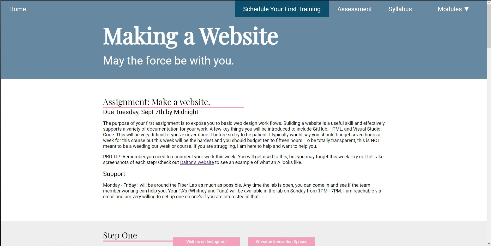First off, I want to prefis this section by mentioning how important it is to follow the very helpful notes that Professor Dunaway has gratefully outlined for us. That being said my life was just about to get significantly harder due to the fact that I was running windows and not mac. You will see that I will be jumping through tons of hoops to get everything to work and more importantly in order to follow the steps properly. In this step we were directed to first download the correct software and assets in order for everything to work together. However, I got too excited and thought that I needed brackets...
2. More Problems
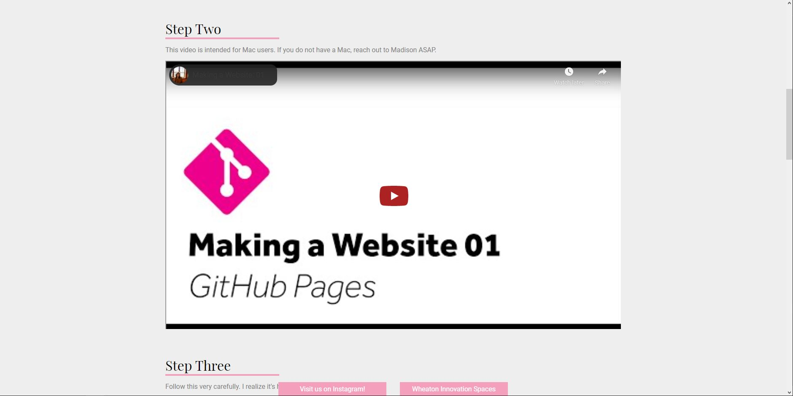Now that I realized that I was not using brackets it was time to move on and begin following the instructional video that was made for us. As I began watching I started to realize that my life was about to get very complicated as I came to the realization that "Terminal" is not the same environment as "Command Prompt" in windows. That being said, I needed to find an alternative in order to follow the steps needed to move forward.
3. Fixing My Setbacks
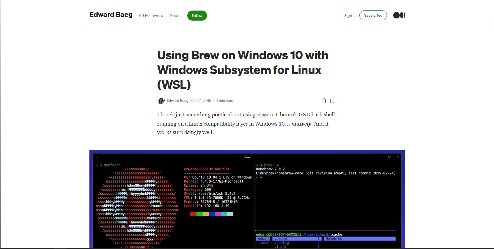After doing some research I found that in order to install Brew (a necessary program used to set up our repository from GitHub and connecting that to VSC) I needed two things, first I needed Ubuntu (A terminal environment that emulated Linux command prompts) and I needed cmder (another emulator that allowed me to run Apple terminal commands in order to find and select a bin while setting up my repository from GitHub). After both things were downloaded It was time to move on finally.
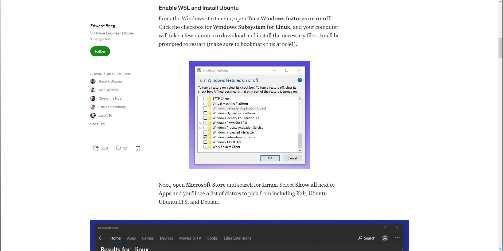4. It was time to finally get started
Now that I had the tools needed to be able to move forwards on my Windows Operating system, I just needed a couple more things to get started. First, I need to install gitbash and setup a github account and repository.
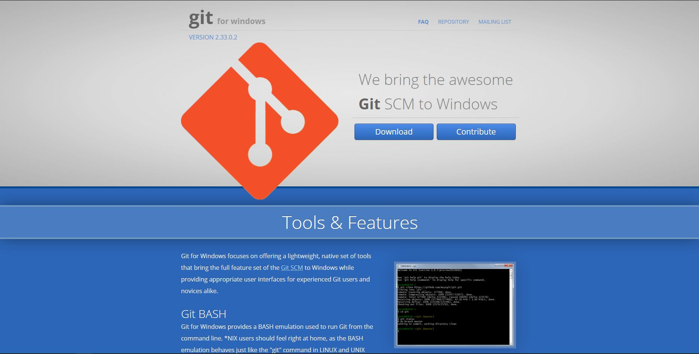5. Moving forward
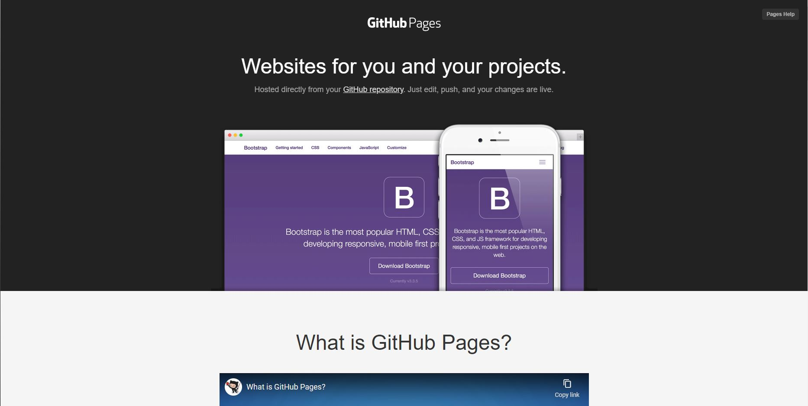Now that I actually have everything I need to move forward with Professor Dunaway's instructions it was time to follow along. We were instructed to go to GitPages and follow along with the steps.
From there, now that I had a GitHub account, I was able to begin creating a GitHub repository where my index.html and all other files related to my website will be found and hosted.
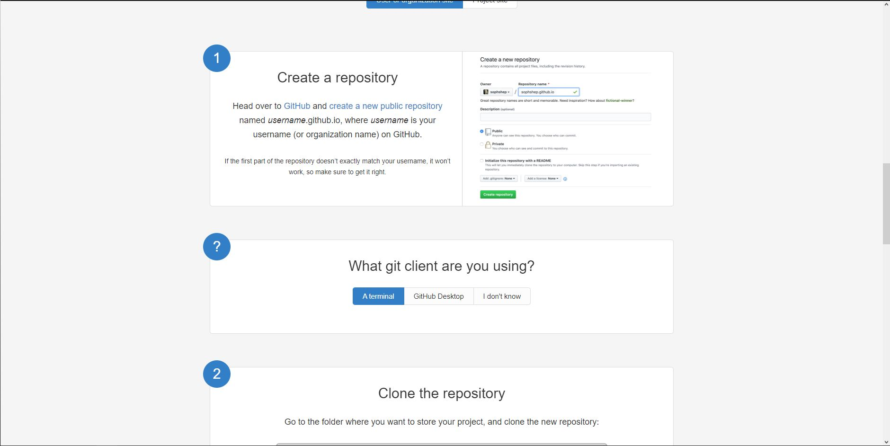 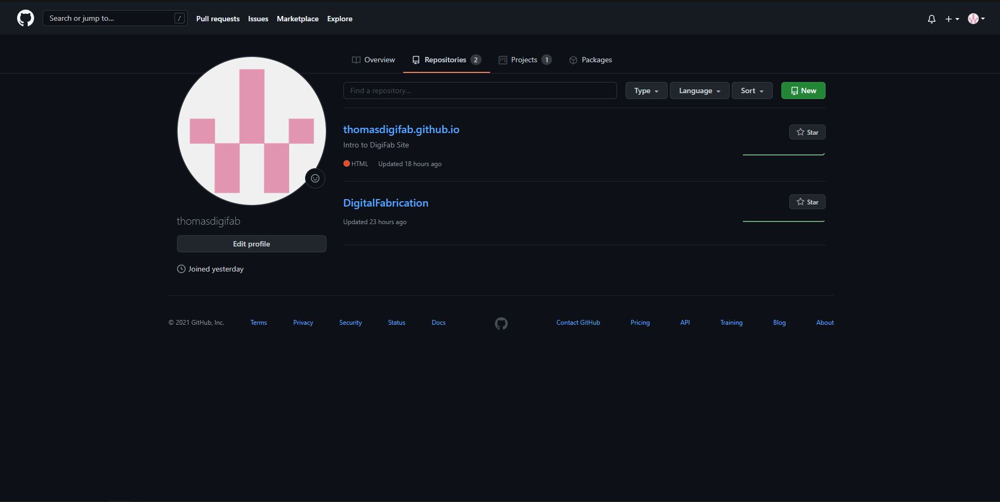6. Installing Brew

As mentioned prior, Homebrew is needed as it installed packages that are vital for coding your website along with many other things that your operating system did not orginially come with. That being said now that I had Ubuntu, I was able to begin coding in Ubuntu in order to install Homebrew.
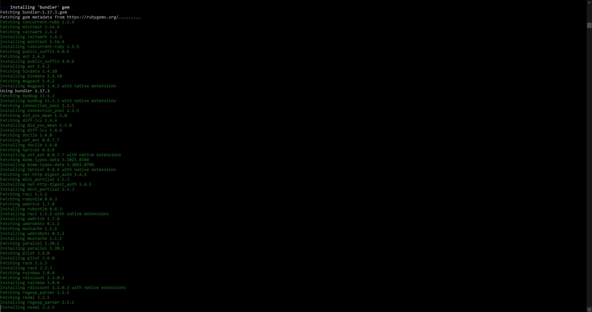 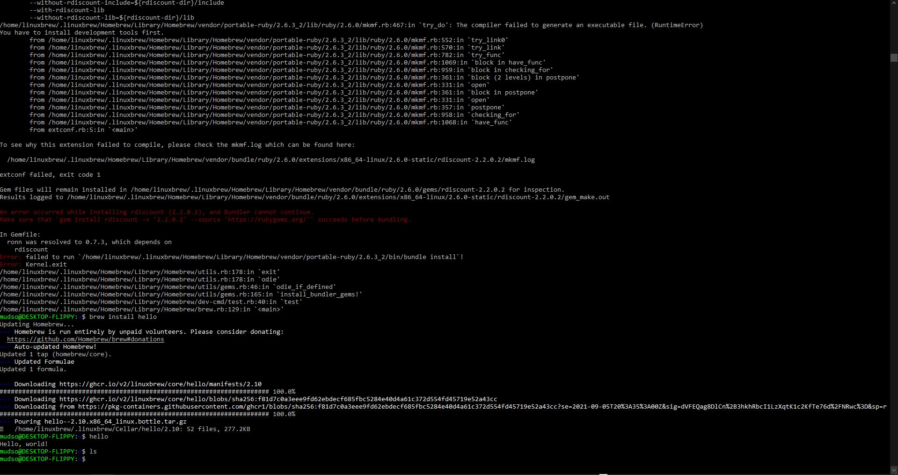Success! After going through each command that was instructed in order to install Homebrew I was able to test that it worked by asking "hello" and it replying. Now with that done, it was time to move over to cmder and follow the steps to setup my repository and bin on my computer.
7. Setting up my "Hello World" through index.html
With Homebrew now successfully done it was now time to switch to cmder. As mentioned previously, cmder is a terminal emulator that emulates different command environments like linux, apple, and windows formats. Therefore I was able to follow along with Professor Dunaway using apple commands without having to worry about translating Apple to Windows commands. This was significantly helpful and I highly recommend using this emulator if you are in fact using windows.
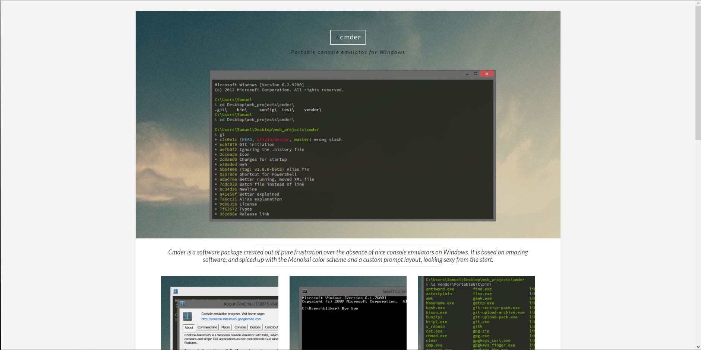In cmder, I was instructed to navigate within our computer to create a path where all files and html's will live. Using the "cd" command, which means change directory, I was able to do this easily. Creating a folder named thomasdigifab.github.io allowed me to know exactly where my path was going to be. The following steps were simple. We now needed to create a index.html in which we would type a temporary text to push to github ensuring that it worked. Using the echo "Hello World" > index.html and git add --all we are able to have the option to do our first commit. At this point we input git commit -m "Initial commit" were we are then prompted with the confirmation that 1 file has been changed. That being said we arent done yet. We now have to do our first push to GitHub to make sure that our website is actually being updated. After inputing our "git push -u origin main" command we are now asked to sign into our GitHub account using our username and password after which we see that we are greeted with a confirmation that it went through!
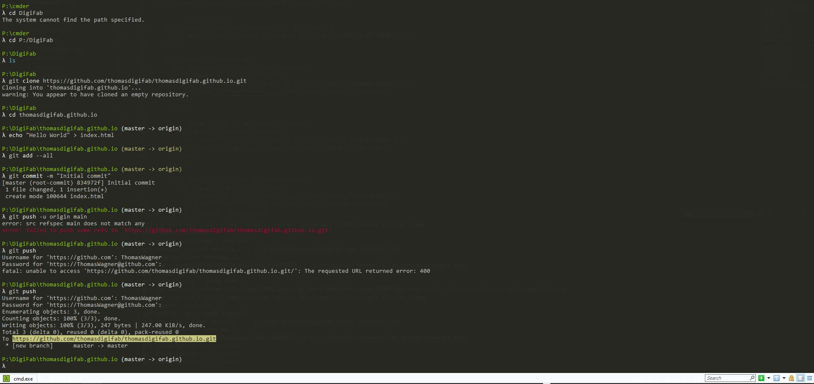8. Time to start our website.
Now that we have everything set up to be ready for coding, we need to either pick out a template to work from or start from scratch. For me, I chose to go with a template as I am a novice coder at best. That being said I did want to challenge myself and choose the most bare bones template where I could really make my mark and play around with different commands and options available to me through CSS and HTML. Through W3 CSS templates I was able to find the one that I wanted and was able to try it out using there in house coding option to see how it would look and feel.
The bigger problem came when linking the buttons of each week's toolbar to the homepage, since those buttons link to specific sections of the homepage, which was now a completely separate page. Solving this required a google search, which yielded the below solution. By copying this, I was able to successfully finish all of my links for all of the pages.


9. Pasting the code.
At this time, It I was ready and felt comfortable enough to paste and push the template onto GitHub, and thats what I did.
From W3 CSS Templates I copied the coding template into my index.html within VSC, went to the changes tab, and made sure to save, commit, and push.
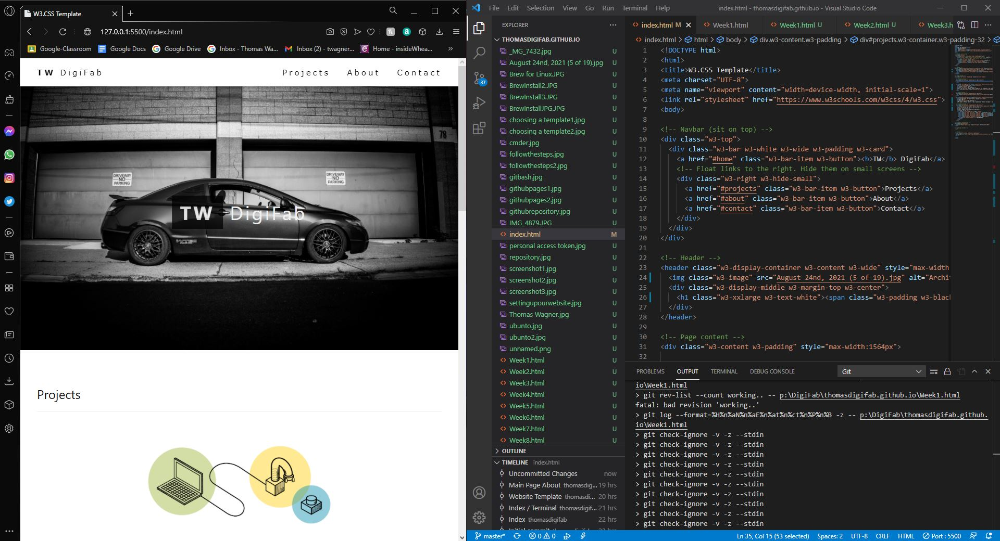In this you can seethe template code on the right within VSC and on the left you can see the Live Preview. Unfortunately, this screenshot is much much later in the process after I had put in my own pictures, text, style choices and not right after pasting.
10. Final Cosmetics
At this point, my website was nearly done. I was able to, with the help from Tuna, insert my own images, text, CSS style, new HTML Pages, and create a personalized Nav Bar when switching through each week. Below, you will be able to see the before website and after my changes, along with all the stylistic choices I had made and finally screenshots of my discussions with Tuna! I dont think I would have been able to figure it out without his help. He was a tremendous help. That being saidm, I am very impressed with the amount of coding I was able to do given that I have really only learned very very basic rudimentry HTML and CSS through Code Academy. This project took a significant amount of trial and error, deleting code and seeing what changed, chopping template code that got in the way of new code I wrote, and finally figuring out how to make everything flow seemlessly through each page.
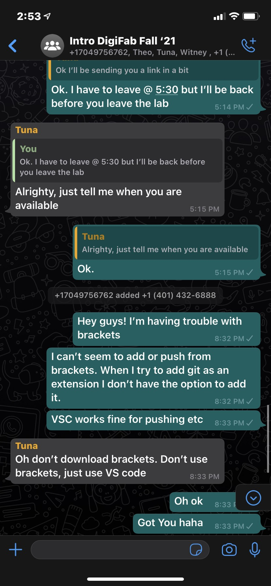 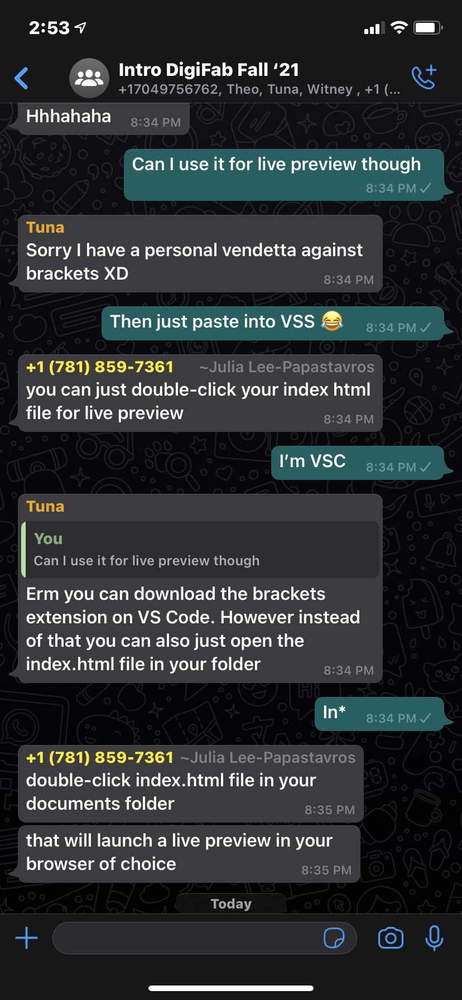 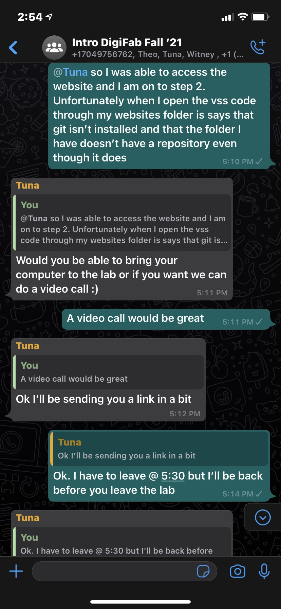Here are the screenshots of before and after and what I had added!
 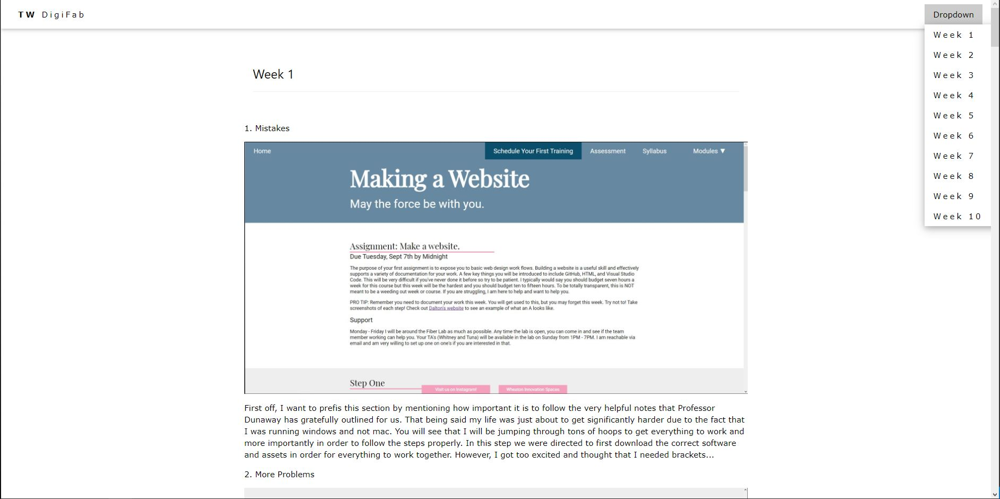
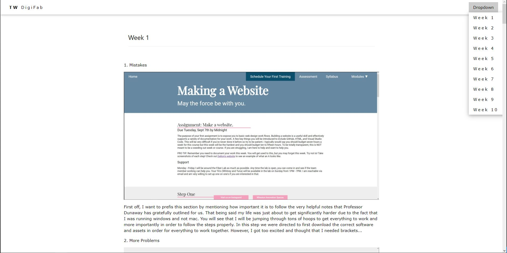